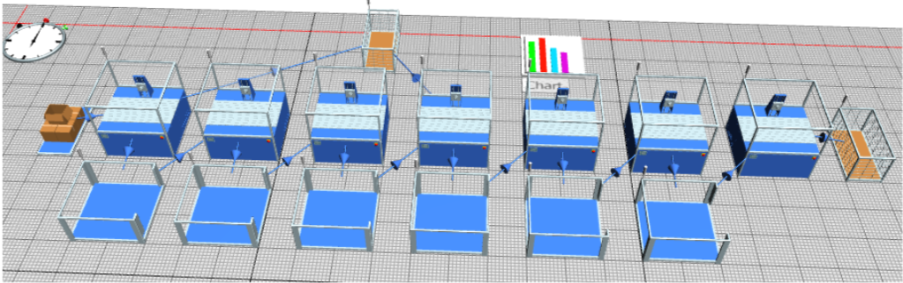
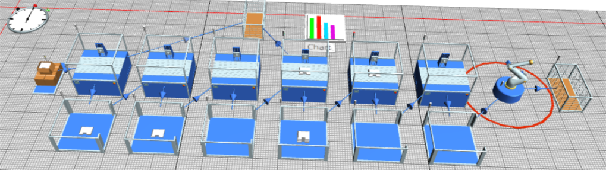
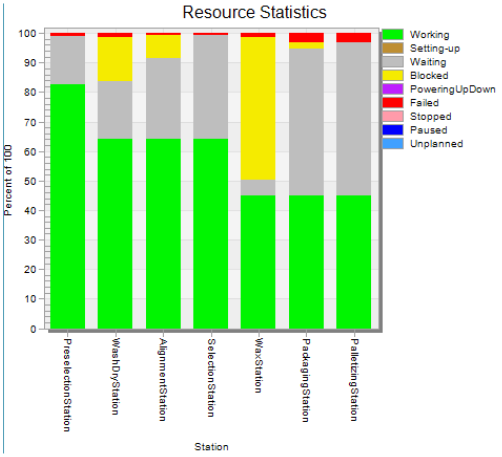
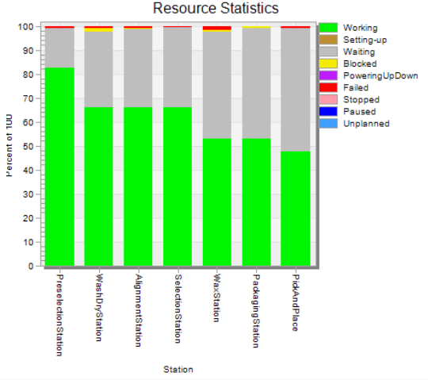

Gestión de la producción
En materia de Gestión de la Producción se pretendió evaluar el desempeño del proceso actual y ver cuánto mejora al implementarse la propuesta de automatización. Para ello fue clave la realización de los diagramas Value Stream Mapping tanto para el proceso actual como para el proceso automatizado, con el objetivo de poner sobre el papel todos los aspectos del proceso en materia de flujo de material, estaciones de trabajo, tiempos de ciclo, OEE y demás temas.
Para la realización de los VSM fue necesario estimar el tiempo de Takt del proceso de producción, el cuál tuvo como resultado un tiempo de 19 segundos. Con base en él y en la demanda estimada, se dibujó el VSM del proceso actual, se identificaron los puntos de mejora y se dibujó posteriormente el VSM para el proceso automatizado.
VSM proceso actual
VSM proceso automatizado
Se estimaron las horas de jornada, el tiempo operativo y las capacidades de producción reales e ideales. Con ellos, se calcularon el tiempo operativo y la cantidad producida real en una jornada, para concluir con el cálculo de OEE. Las mejoras sustanciales que se dan cuando se realiza la automatización son en tiempo muerto y en productividad de ciclo.
Simulación en Plant simulation
Ambos procesos, tanto el actual como el de la propuesta de automatización, fueron simulados en el software Tecnomatix Plant Simulation, en una configuración con estaciones de trabajo y buffers. Cada estación de trabajo correspondió a una etapa del proceso de manufactura, y cada buffer se utilizó para modelar el efecto de inventario entre procesos, de manera que las estaciones que terminaran con su operación no se quedaran bloqueadas esperando a que se libere la siguiente estación. En cada estación, se ajustaron los parámetros de eficiencia, especialmente los tiempos de ciclo y la disponibilidad.
Imagen de la planta del proceso actual
Imagen de la planta del proceso automatizado
Los resultados de la simulación comprenden primero, los tiempos de salida por unidad y segundo, las gráficas estadísticas de las estaciones en conjunto.
| Proceso actual | Proceso automatizado |
|---|---|
| 22.2902 s | 18.9239 s |
De inmediato se puede observar que se está teniendo como resultado una mejora en el tiempo de ciclo total para la salida de cada canasta, y además, el tiempo de ciclo resultante después de llevar a cabo la automatización propuesta resulta ser menor al tiempo de Takt establecido por la demanda mensual estimada, el cuál correspondió a 19 s.
Etapas del proceso actual
Etapas del proceso automatizado
Se observa que el comportamiento del tiempo de trabajo para las etapas tiene una forma similar para ambos procesos. Sin embargo, es evidente que hay una reducción significativa en el tiempo de bloqueo en la estación de encerado, y eso se traduce en un aumento en los tiempos de trabajo de las últimas tres estaciones. De cualquier manera, el tiempo que aparece "de espera" o "waiting" es en realidad causado por la forma en como se simulan los buffers, los cuales no entregan el producto tan pronto como es requerido por la estación siguiente, sino que esperan un tiempo determinado. Ello nos lleva a concluir que en la realidad, el tiempo de ciclo será aún más reducido y cumplirá con más veras el tiempo de Takt.